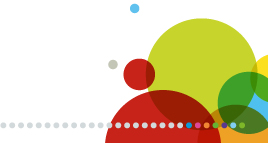

OCTUBRE
LME llega a Antofagasta y Chiloé
Durante el primer semestre del 2014 se inició un proceso de implementación de la LME en Regiones. Para finde año se espera que su cobertura llegue desde Parinacota hasta Punta Arenas.
www.i-med.cl
•
comercial@i-med.cl
•
+562 2714 9500
